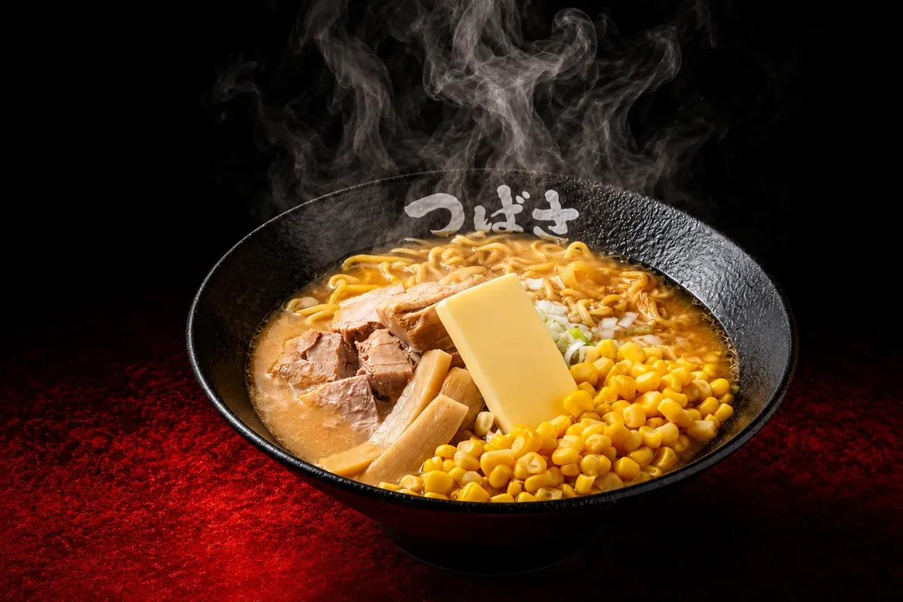
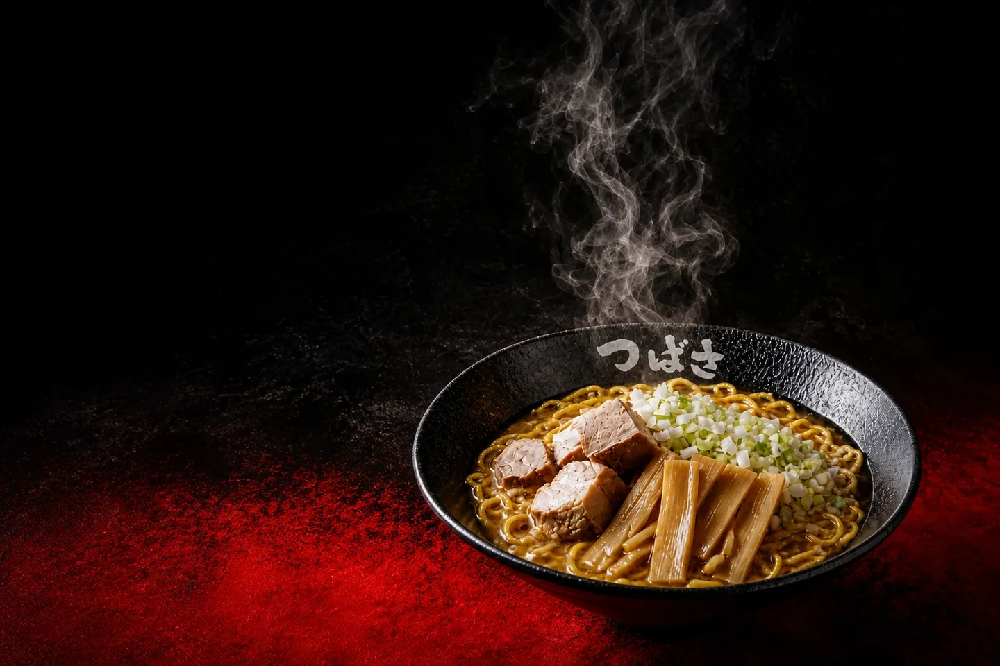
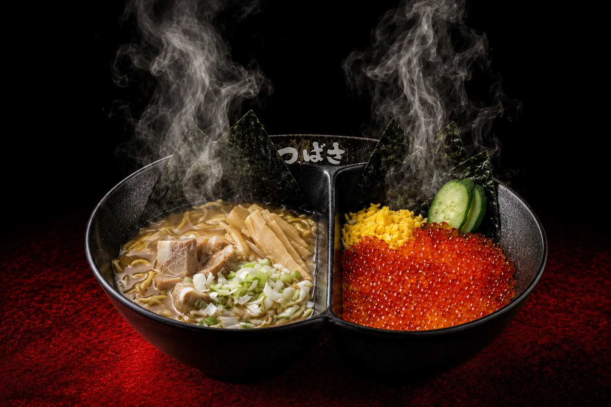
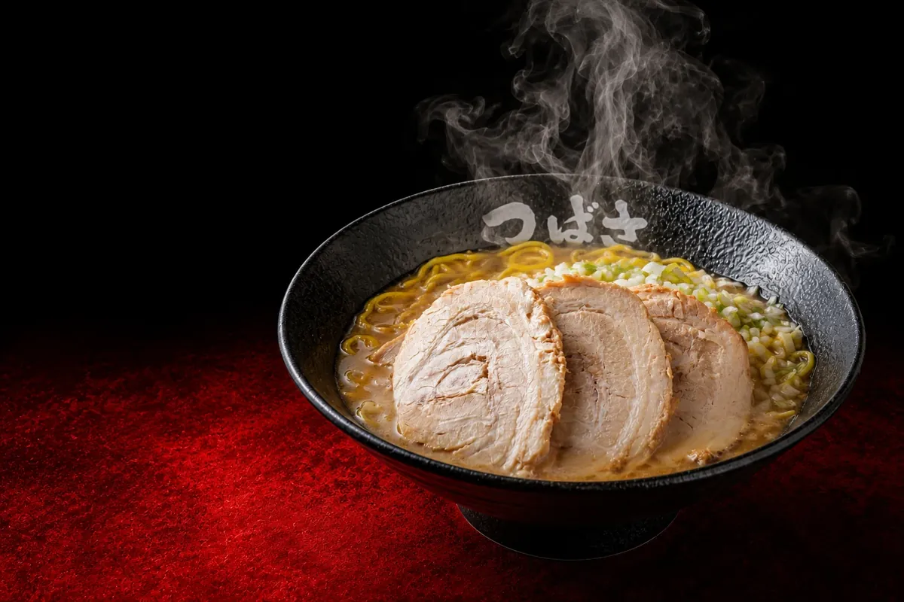
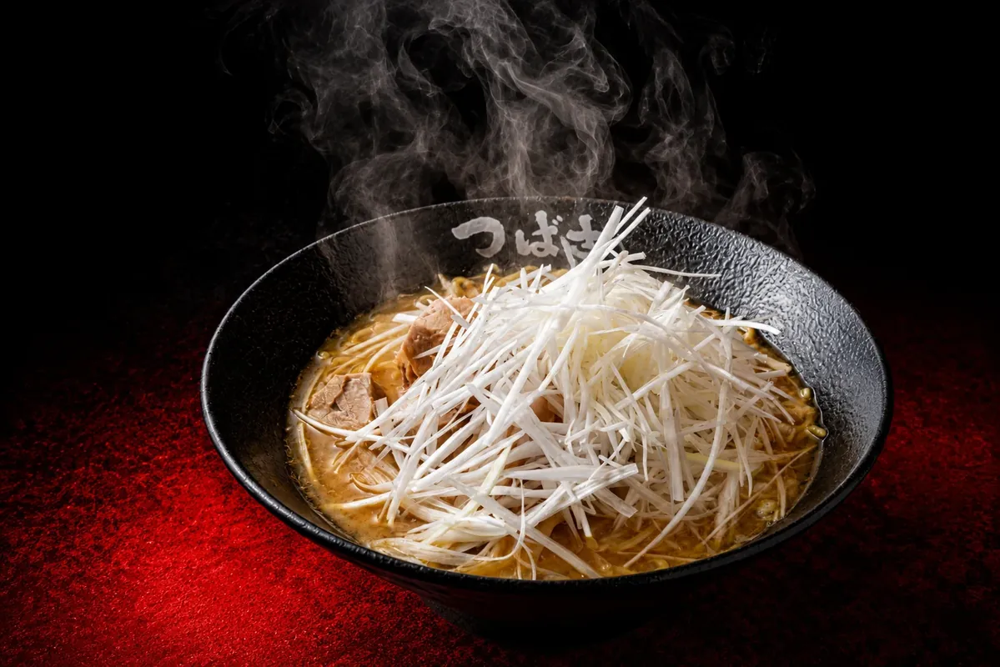
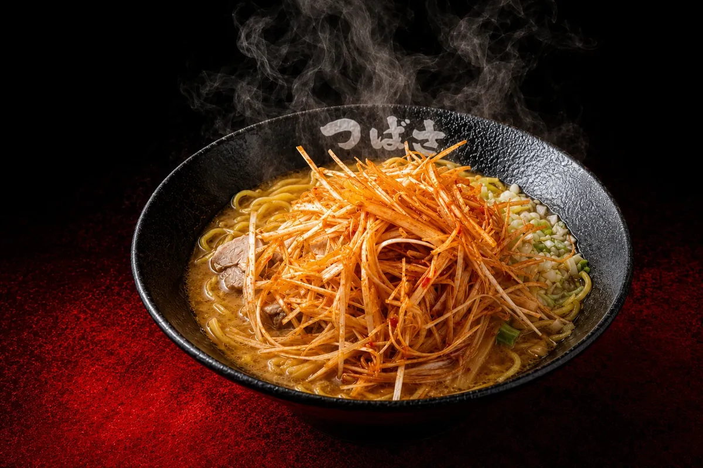
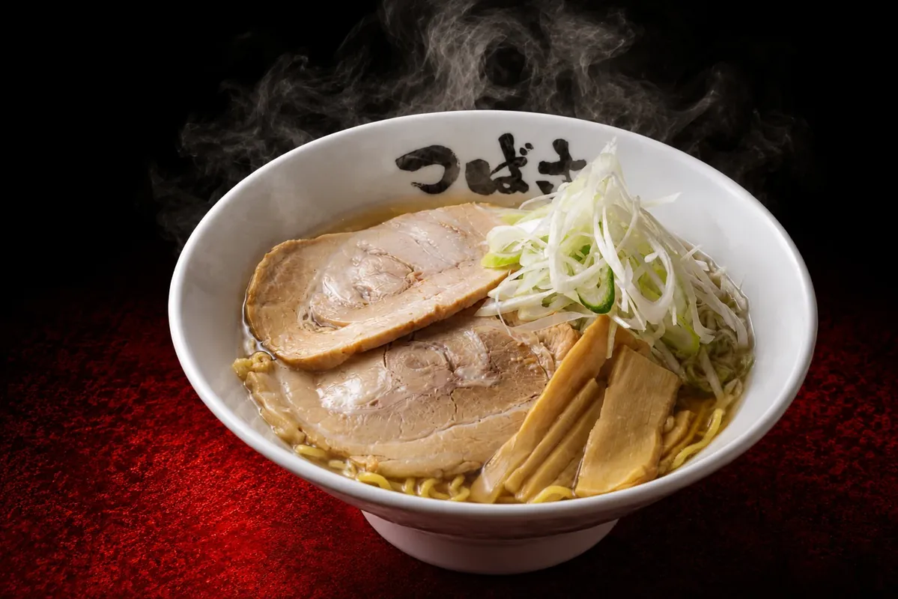
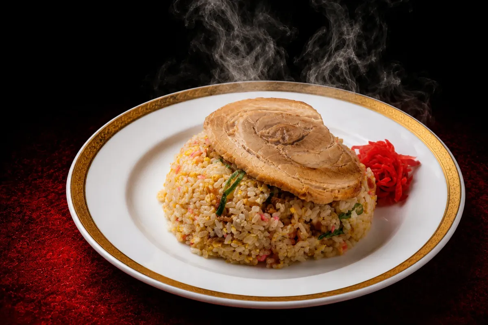
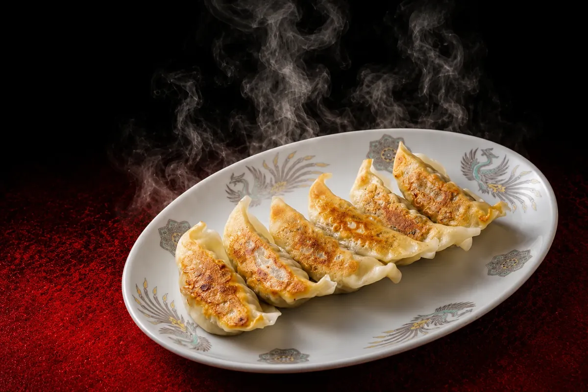
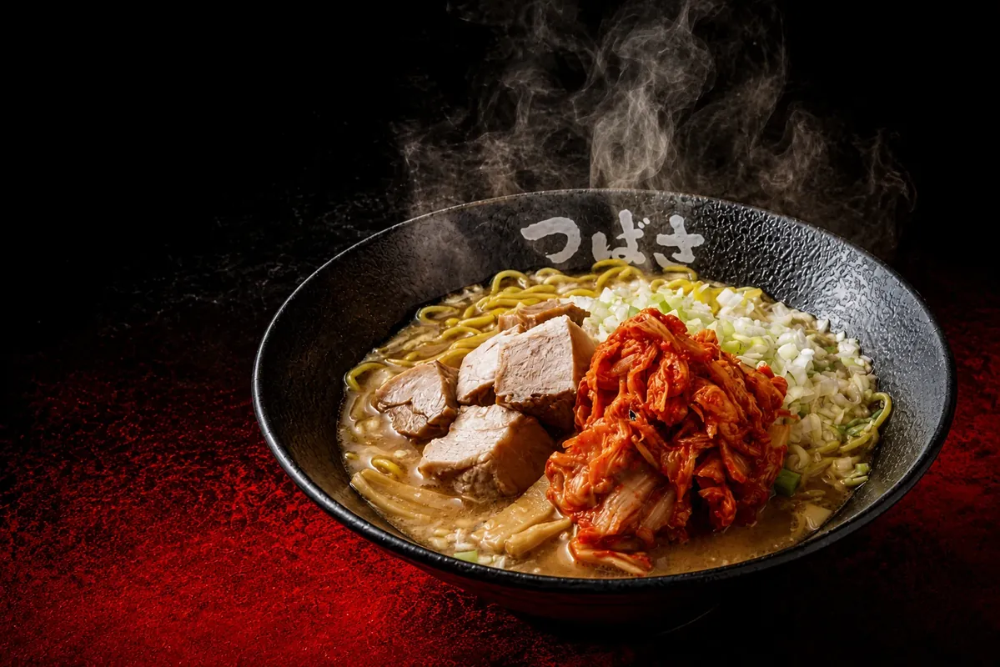

バターコーンラーメン
味噌 ¥1,400 / 塩・醤油 ¥1,300
ネオンの街で、変えずに守ってきた一杯。

三日間煮込んだスープと特注麺、トロトロチャーシュー。味一番つばさの原点。
¥1,100
いくら丼とハーフラーメン。究極の味噌と並ぶ、もうひとつの「つばさ」。
¥2,000定番も、夜に欲しくなる一杯も。

味噌 ¥1,400 / 塩・醤油 ¥1,300

味噌 ¥1,450 / 醤油・塩 ¥1,350

味噌 ¥1,300 / 醤油・塩 ¥1,180

味噌 ¥1,300 / 醤油・塩 ¥1,180

各 ¥980

¥800

¥500

味噌 ¥1,250 / 醤油・塩 ¥1,130
新ラーメン横丁。カウンター越しに湯気が立つ。観光の一杯も、仕事帰りの一杯も。
毎週月曜日 定休
札幌市中央区南4条西3丁目1-1
第3グリーンビル 新ラーメン横丁